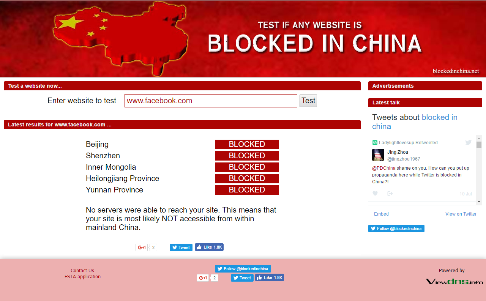

Censorship:
What is censorship? According to the Global Internet Liberty Campaign, “Censorship is the control of the information and ideas circulated within a society” (What is Censorship?, Web). Censorship is not a new concept. It has been around since ancient times and every society has had customs, taboos or laws by which speech, dress, religious observance, and sexual expression have been regulated. Censorship is dealt with in many different ways around the world. For example, it is widely known the the United States first amendment allows Americans the right to freedom of speech. North Korea on the other hand ranks among the most extreme in the world in terms of censorship. According to the World Press Freedom Index in 2016, North Korea is ranked second to last in the world at 179. A reason that North Korea is ranked at the bottom is all media outlets are strictly owned and controlled by the North Korean government. The media dedicates a large portion of its time towards political propaganda promoting its leader Kim Jong-un (VOA News, Web). Speaking out against the government could potentially have you jailed. It is important to learn and understand how different countries throughout the world use censorship.
China’s Great Firewall:
A very well known example of a country that censors people is China. China has the largest population of citizens online. There are 700 million users on the internet. China is 25% of the world’s total online population (Denyer, 2016). Wired magazine has coined a name for China’s censorship of media and the internet as “The Great Firewall of China” (Denyer, 2016). This firewall is responsible for blocking many western sites for example, Facebook, Twitter, Instagram, and most Google services. There is an interesting way in which you can check to see if a website is blocked. The website that provides this information for you is called Blocked in China which you can click on below to view.
How this “firewall” works is by blocking keywords from showing up in searches. An example that the article “China’s scary lesson to the world: censoring the Internet works” uses is the events that took place in Tiananmen square in the late 1980’s. If you search for Tiananmen tank man under this firewall, your search will weild no results. (Denyer, 2016). They have other ways in which they censor information too. “Some estimates say that the government employs roughly 100,000 people, hired both by the state and private companies, to constantly monitor China's Internet” (Xu, Web). China also hires private companies to make sure what is being said online reflects what the government would want the people to think of it.
Networked Authoritarianism:
What is networked Authoritarianism? According to Rebecca MacKinnon, “When an authoritarian regime embraces and adjusts to the inevitable changes brought by digital communications, the result is what I call ‘networked authoritarianism’” (MacKinnon, 33). A good example of a networked authoritarian state is China. In this networked authoritarian state, the government remains in control while a wide range of conversations about the country occur on websites and social-networking services. The government gives the people a false sense of security when it comes to discussing political topics online. The government follows online conversations on social-networking sites and people call attention to problems about their government and sometimes they are able to have an impact on government policies. Other times people who are seen as threats are jailed for what they say online.
Morozov’s Take On Censorship:
Morozov has a very interesting take on censorship. “While we thought the Internet might give us a generation of ‘digital renegades,’ it may have given us a generation of ‘digital captives,’ who know how to find comfort online, whatever the political realities of the physical world. For these captives, online entertainment seems to be a much stronger attractor than reports documenting human rights abuses by their own governments” (Morozov, 70). Morozov is suggesting that online entertainment “distracts” people from what is actually going on inside their country. They find comfort in online entertainment and because of this they do not pay attention to political things that are going on in the country. An example that Morozov brings up is countries who have previously banned people from viewing pornography have since allowed it. China quickly lifted their ban in 2009 after realizing that censorship was a way to politicize millions of Chinese Internet users (Morozov, 70). Morozov goes on to explain that most of the blocked sites on the internet in countries such as China are political resources while leaving pornographic sites unblocked. The main take away from his view on censorship is that governments are trying to not censor entertainment sites as they are a great way to distract its populace from ongoing political events that are occuring in the country.
Hussain’s Example:
Another example of a networked authoritarian government would be Egypt. Hussain talks about Egypt and how people were able to pass the censorship barriers. A regional executive at Google started a Facebook group that was in remembrance of a blogger named Khaled Said. Khaled was beaten to death by the police in Egypt because of things that he had exposed on his blog about them. The pictures of his beaten face were posted to this Facebook page and sent from phone to phone until it had reached thousands of people. People began protesting against their government. Not only for this but against the political ideologies of past leaders in Egypt. The government then tried disconnecting its citizens from the internet which did not really work. Tech savvy students found a way to get satellite phones and dial-up connections to other countries so they were able to still access the internet. The government however tried using Facebook and Twitter as a source for a counterinsurgency strategy. It was trying to predict where and when people would begin protesting. This is an example of how the government was able to adjust quickly and follow online chatter about where certain groups were going to be protesting.
CONCLUSION:
It is important to understand how network-authoritarian governments use censorship in the modern age of the internet. We need to understand how it works in different countries. Censorship has the ability to potentially influence its citizens based on what has been censored. It also important because you can potentially help people whose voice is not being heard because of this. An example that I provided was from Hussain’s segment. In Egypt, people were fed up with their government and their voice was being restricted so people stepped in to help them have their voices heard. As we progress in the age of the internet, we need to understand the potential harms of censorship and how that is going to shape our society.
WORKS CITED
Denyer, Simon. "China's Scary Lesson to the World: Censoring the Internet Works." The Washington Post. WP Company, 23 May 2016. Web. 04 Dec. 2016.
MacKinnon, R. (2011, April). China's "Networked Authoritarianism" Journal of Democracy, 22(2), 33.
Xu, B. (2015, April 7). Media Censorship in China. Retrieved December 2, 2016, from http://www.cfr.org/china/media-censorship-china/p11515
Howard, P. N., & Hussain, M. M. (2013). Democracy's fourth wave?: Digital media and the Arab Spring. Oxford University Press.
Morozov, E. (2011). The net delusion: The dark side of internet freedom. New York, NY: PublicAffairs.
ѱ а 縦 ıϴ. (2015, February 12). Retrieved December 02, 2016, from http://chogabje.com/board/view.asp?C_IDX=31150&C_CC=AZ
What is Censorship? (n.d.). Retrieved December 02, 2016, from http://gilc.org/speech/osistudy/censorship/
2016 World Press Freedom Index | Reporters Without Borders. (n.d.). Retrieved December 02, 2016, from https://rsf.org/en/ranking